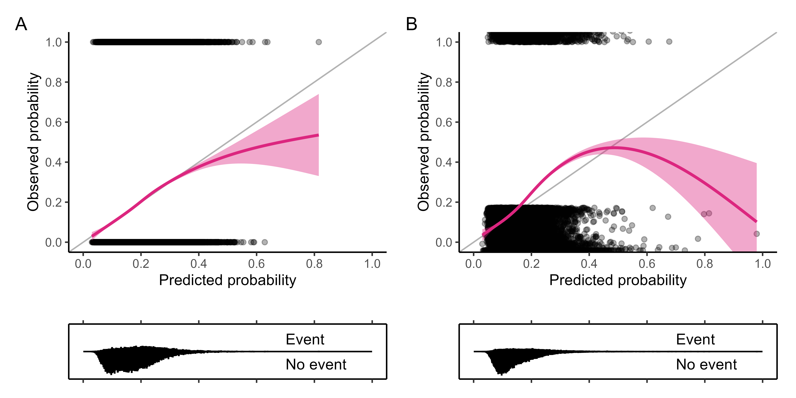
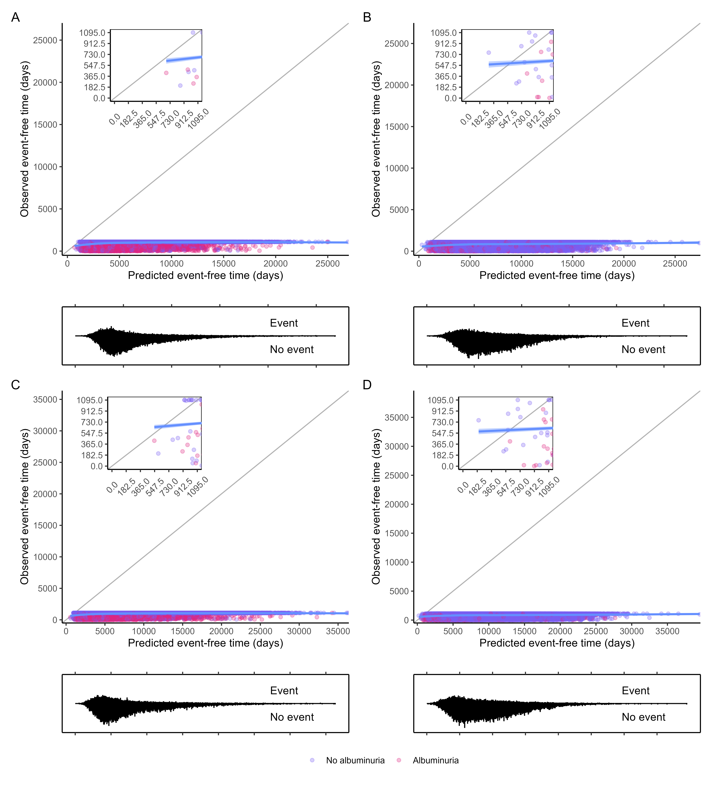
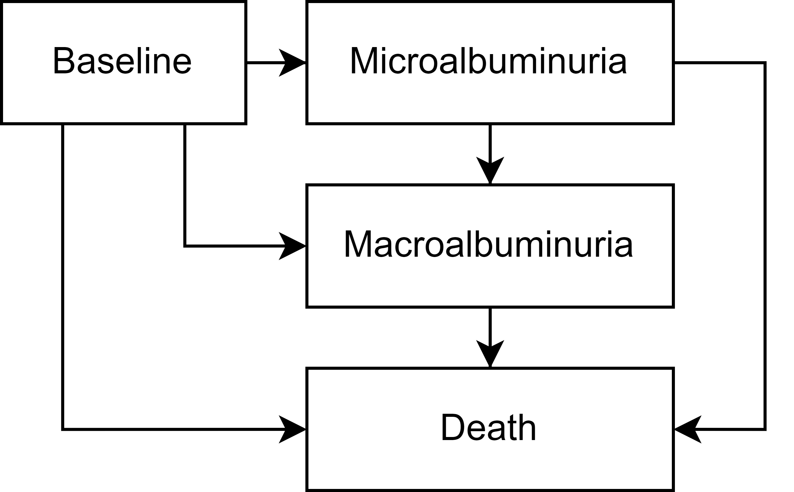
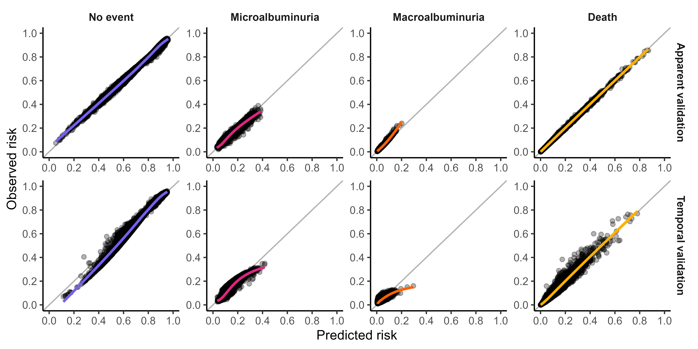

![]()
| Overall | Censored | Albuminuria | Died | Overall | Censored | Albuminuria | Died | |
|---|---|---|---|---|---|---|---|---|
| Number of individuals | 38,649 | 30,192 | 6,904 | 1,553 | 45,009 | 37,609 | 6,499 | 901 |
| Age, yrs, mean (SD) | 63.3 (12.6) | 62.3 (12.4) | 65.8 (12.3) | 73.5 (11.4) | 62.2 (12.9) | 61.4 (12.7) | 65.3 (13.2) | 73.1 (11.2) |
| Female (%) | 16,929 (43.8) | 13,178 (43.6) | 3,059 (44.3) | 692 (44.6) | 18,919 (42.0) | 15,747 (41.9) | 2,783 (42.8) | 389 (43.2) |
| Higher education (%) | 10,064 (26.8) | 8,206 (27.9) | 1,602 (23.8) | 256 (17.2) | 14,069 (32.5) | 12,075 (33.4) | 1,766 (28.4) | 228 (26.1) |
| Comorbidities | ||||||||
| Atrial fibrillation (%) | 3,121 (8.1) | 1,987 (6.6) | 828 (12.0) | 306 (19.7) | 3,175 (7.1) | 2,283 (6.1) | 730 (11.2) | 162 (18.0) |
| Congestive heart failure (%) | 3,198 (8.3) | 1,988 (6.6) | 811 (11.7) | 399 (25.7) | 2,267 (5.0) | 1,561 (4.2) | 540 (8.3) | 166 (18.4) |
| Cereborvascular disease (%) | 2,834 (7.3) | 1,927 (6.4) | 642 (9.3) | 265 (17.1) | 2,614 (5.8) | 1,925 (5.1) | 562 (8.6) | 127 (14.1) |
| Hypertension (%) | 22,746 (58.9) | 17,239 (57.1) | 4,484 (64.9) | 1,023 (65.9) | 27,145 (60.3) | 22,105 (58.8) | 4,361 (67.1) | 679 (75.4) |
| Ischemic heart disease (%) | 7,035 (18.2) | 5,083 (16.8) | 1,493 (21.6) | 459 (29.6) | 5,553 (12.3) | 4,251 (11.3) | 1,109 (17.1) | 193 (21.4) |
| Peripheral vascular disease (%) | 1,319 (3.4) | 846 (2.8) | 326 (4.7) | 147 (9.5) | 1,033 (2.3) | 733 (1.9) | 237 (3.6) | 63 (7.0) |
| Diabetic complications | ||||||||
| Ulcer (%) | 85 (0.2) | 52 (0.2) | 22 (0.3) | 11 (0.7) | 134 (0.3) | 93 (0.2) | 35 (0.5) | 6 (0.7) |
| Retinopathy (%) | 211 (0.5) | 161 (0.5) | 41 (0.6) | 9 (0.6) | 513 (1.1) | 409 (1.1) | 91 (1.4) | 13 (1.4) |
| Neuropathy (%) | 59 (0.2) | 40 (0.1) | 18 (0.3) | 1 (0.1) | 288 (0.6) | 222 (0.6) | 51 (0.8) | 15 (1.7) |
| Medication use | ||||||||
| Aspirin (%) | 13,189 (34.1) | 9,748 (32.3) | 2,725 (39.5) | 716 (46.1) | 8,172 (18.2) | 6,292 (16.7) | 1,598 (24.6) | 282 (31.3) |
| Beta blockers (%) | 14,418 (37.3) | 10,552 (34.9) | 3,098 (44.9) | 768 (49.5) | 13,245 (29.4) | 10,342 (27.5) | 2,474 (38.1) | 429 (47.6) |
| Calcium-channel blockers (%) | 8,696 (22.5) | 6,381 (21.1) | 1,889 (27.4) | 426 (27.4) | 11,243 (25.0) | 9,031 (24.0) | 1,938 (29.8) | 274 (30.4) |
| Glucose lowering drugs (%) | 23,549 (60.9) | 18,185 (60.2) | 4,512 (65.4) | 852 (54.9) | 26,883 (59.7) | 22,478 (59.8) | 3,945 (60.7) | 460 (51.1) |
| Anticoagulants (%) | 19,338 (50.0) | 14,227 (47.1) | 4,055 (58.7) | 1,056 (68.0) | 13,076 (29.1) | 10,035 (26.7) | 2,566 (39.5) | 475 (52.7) |
| Antihypertensives (%) | 339 (0.9) | 244 (0.8) | 84 (1.2) | 11 (0.7) | 349 (0.8) | 275 (0.7) | 64 (1.0) | 10 (1.1) |
| Insulin (%) | 11,142 (28.8) | 8,320 (27.6) | 2,222 (32.2) | 600 (38.6) | 5,249 (11.7) | 4,112 (10.9) | 964 (14.8) | 173 (19.2) |
| MRAs (%) | 1,580 (4.1) | 1,012 (3.4) | 374 (5.4) | 194 (12.5) | 1,289 (2.9) | 958 (2.5) | 255 (3.9) | 76 (8.4) |
| RASi (%) | 20,350 (52.7) | 15,444 (51.2) | 4,025 (58.3) | 881 (56.7) | 22,810 (50.7) | 18,696 (49.7) | 3,595 (55.3) | 519 (57.6) |
| Statins (%) | 18,879 (48.8) | 14,606 (48.4) | 3,568 (51.7) | 705 (45.4) | 18,656 (41.4) | 15,378 (40.9) | 2,891 (44.5) | 387 (43.0) |
| Laboratory values | ||||||||
| uACR, mg/g, median [IQR] | 14.1 [5.3, 26.9] | 11.5 [4.4, 26.9] | 20.8 [8.8, 26.9] | 19.2 [8.0, 26.9] | 7.3 [4.2, 14.1] | 7.1 [3.9, 11.7] | 11.2 [6.2, 20.8] | 9.7 [5.8, 21.6] |
| eGFR, mL/min/1.73m2, median [IQR] | 90.5 [78.0, 100.3] | 91.4 [79.5, 100.9] | 88.1 [74.2, 98.5] | 81.4 [69.6, 91.8] | 95.8 [85.2, 105.4] | 96.3 [85.9, 105.8] | 93.6 [82.1, 103.8] | 89.1 [77.2, 97.7] |
| HbA1c, mmol/mol, median [IQR] | 46.0 [38.3, 56.8] | 45.8 [37.7, 56.3] | 48.0 [39.9, 59.2] | 45.4 [37.0, 56.3] | 48.0 [42.8, 57.0] | 47.5 [42.5, 56.2] | 49.3 [44.0, 59.0] | 49.0 [43.0, 59.0] |
| LDL, mg/dL, mean (SD) | 88.1 (39.0) | 88.6 (38.9) | 86.3 (39.3) | 86.6 (39.2) | 90.6 (41.9) | 91.1 (41.9) | 88.2 (41.5) | 85.7 (42.4) |
| HDL, mg/dL, median [IQR] | 22.1 [18.0, 27.1] | 22.1 [18.0, 27.1] | 21.8 [17.7, 26.7] | 22.7 [18.2, 28.4] | 21.9 [18.2, 26.7] | 21.9 [18.3, 26.7] | 21.6 [17.8, 26.2] | 22.0 [18.2, 28.0] |
| Total cholesterol, mg/dL, median [IQR] | 109.6 [89.8, 142.3] | 109.8 [90.3, 142.1] | 108.1 [88.5, 141.0] | 111.0 [86.9, 150.8] | 98.8 [84.0, 115.9] | 98.9 [84.4, 116.0] | 98.2 [82.6, 115.5] | 96.4 [81.0, 114.6] |
| Total cholesterol:HDL ratio, mean (SD) | 4.1 (1.4) | 4.1 (1.4) | 4.1 (1.5) | 3.9 (1.6) | 4.1 (1.4) | 4.1 (1.4) | 4.2 (1.4) | 3.9 (1.4) |
| Triglycerides, mg/dL, median [IQR] | 128.4 [88.9, 181.6] | 127.0 [88.6, 179.8] | 135.8 [97.4, 191.3] | 119.6 [85.0, 166.1] | 132.9 [97.4, 188.0] | 132.9 [97.4, 186.9] | 139.9 [99.2, 194.1] | 124.0 [93.9, 177.1] |
| Urine creatinine, mg/dL, median [IQR] | 99.5 [65.6, 143.7] | 100.7 [66.7, 145.9] | 93.9 [62.2, 136.9] | 83.7 [57.7, 120.5] | 109.7 [72.4, 157.2] | 111.6 [73.5, 158.7] | 101.8 [67.9, 147.6] | 96.2 [61.1, 136.9] |
Predicting the risk of and days without albuminuria as an early marker of kidney disease in patients with diabetes mellitus: a development and validation study
Additional information for the focussed oral at the 62nd ERA conference, Vienna 2025
Abstract
Background: Patients with type 2 diabetes mellitus (T2DM) are at high risk of kidney disease, which may be ameliorated by early detection of albuminuria. Clinical prediction models (CPMs) can tailor guideline-indicated screening to the individual patient, but no adequate CPMs are currently available. Modern methods allow us to predict more than just a single risk at a single point in time. We aimed to predict 3-year albuminuria risk to show how risk progresses over time, albuminuria-free time in days as a more intuitive outcome, and the risk of different outcomes over 3 years, at the moment of a first normoalbuminuric test.
Methods: We used data from the Stockholm Creatinine Measurements cohort. We selected patients with T2DM, a normoalbuminuric test, and no prior albuminuria between 2007-2021 from all Stockholm residents. Subsequently, we created a development (2007-2013) and temporal validation (2014-2021) cohort. Predictors were selected based on clinical expertise, literature, and previous CPMs. Albuminuria was defined as urine albumin-creatinine ratio (uACR) ≥30mg/g. We predicted an individual’s risk of albuminuria using a Fine-Gray CPM taking into account the competing risk of death and showing risk progression over time. Additionally, we predicted the albuminuria-free time using an accelerated failure time (AFT) CPM. Lastly, we simultaneously predicted the risks of microalbuminuria (uACR ≥30mg/g & <300mg/g), macroalbuminuria (uACR ≥300mg/g), and death using a multistate CPM. Model discrimination and calibration were assessed in the development and temporal validation cohort.
Results: The development cohort contained 38,649 individuals with 6,904 events and the validation cohort contained 45,009 individuals with 6,499 events. The Fine-Gray CPM had adequate discrimination internally (C-statistic, 95%CI; 0.64, 0.64-0.65) and temporally (0.66, 0.66-0.67). Calibration was good. The Fine-Gray model was also able to accurately show individual albuminuria risk progression over 3 years. The AFT CPM had adequate discrimination (internally: 0.63, 0.62-0.63; temporally: 0.65, 0.64-0.65), but poor calibration. The multistate CPM allowed individual predictions for each state over 3 years. An example of an individual’s predictions is shown in the Figure.
Discussion: Predicting albuminuria in T2DM patients allows tailoring albuminuria screening to the individual. We developed multiple CPMs that accurately provide the probability of developing different stages of albuminuria over time. The Fine-Gray model and multistate model give the patient and healthcare provider insight in how the risk of albuminuria develops over time. Additionally, the multistate CPM allows shared decision-making taking into account not only the main outcome of interest, but also other events that may occur (e.g. death). These models can serve to improve albuminuria screening and ameliorate the risk of kidney damage in patients with T2DM, partially through novel presentation of prognostic information.
Baseline characteristics
Predictors
The following predictors were included:
| Predictor | Handling |
|---|---|
| Female | Binary |
| Age | Natural spline w/ knot at 60 |
| Education | Binary |
| Diabetes months | Linear |
| Comorbidities | |
| Atrial fibrillation | Binary |
| Congestive heart failure | Binary |
| Cerebrovascular disease | Binary |
| Hypertension | Binary |
| Ischemic heart disease | Binary |
| Neuropathy | Binary |
| Diabetic complications | |
| Peripheral vascular disease | Binary |
| Retinopathy | Binary |
| Ulcer | Binary |
| Medication use | |
| Aspirin | Binary |
| Beta blockers | Binary |
| Glucose lowering drugs | Binary |
| Calcium-channel blockers | Binary |
| Anticoagulants | Binary |
| Antihypertensives | Binary |
| Insulin | Binary |
| MRAs | Binary |
| RASi | Binary |
| Statins | Binary |
| Laboratory values | |
| eGFR | Natural spline w/ knot at 105 |
| Urine creatinine | Natural spline w/ knot at 180 |
| HbA1c | Natural spline w/ knots at 40 and 65 |
| Total cholesterol | Natural spline w/ knot at 100 |
| HDL | Natural spline w/ knot at 25 |
| LDL | Natural spline w/ knot at 80 |
| Triglycerides | Linear |
| Total cholesterol:HDL | Natrual spline w/ knot at 5 |
| Baseline uACR | Natural spline w/ knot at 15 |
Fine-Gray model
The Fine-Gray model was developed in the development cohort (n = 38,649), where 6,904 individuals developed albuminuria, 1,553 died, and 30,192 were censored. In the temporal validation cohort (n = 45,009), 6,499 individuals developed albuminuria, 901 individuals died, and 37,609 individuals were censored.
The calibration of the Fine-Gray model was good from one year onwards, with calibration at three years being:

Although the right tail shows miscalibration, it is important to note that the majority of the 80,000 individuals had a predicted risk below 40%, where calibration was good. The C-statistic of the model was 0.64 (0.64-0.65) apparently and 0.66 (0.66-0.67) temporally. Although discrimination could be higher, the histograms below the above discrimination plot shows that the risks between individuals with and without event are separated in good discrimination for lower risk and higher risks with an indiscriminative range in-between. Thus, the model could be useful for the identification of individuals with a low and high risk.
Accelerated failure time model
The accelerated failure time (AFT) model was fit using two distributions: i) a Weibull distribution which assumes an increasing hazard of albuminuria over time, and ii) a log-normal distribution which assumes an early increase in hazard of albuminuria, with a decreasing hazard afterwards.
For both distributions, we calculated the failure time (which can be interpeted as the number of days without albuminuria and not censored) and the risk of albuminuria. The failure time was poorly calibrated, with times far exceeding the observation time (although the calibration slope indicated no overfitting or underfitting). From the same model, we could calculate risks, which performed similar to the Fine-Gray model, indicating no model misspecification. The calibration plots of the failure time are given below:

Multistate model
The multistate model was fitted with covariate expansion. The state model is seen below:

For the development data, the transition numbers were:
| Baseline | Microalbuminuria | Macroalbuminuria | Death | No event | Total entering | |
|---|---|---|---|---|---|---|
| Baseline | 0 | 5927 | 977 | 1553 | 30192 | 38649 |
| Microalbuminuria | 0 | 0 | 423 | 317 | 5187 | 5927 |
| Macroalbuminuria | 0 | 0 | 0 | 141 | 1259 | 1400 |
| Death | 0 | 0 | 0 | 0 | 2011 | 2011 |
For the validation data, these were:
| Baseline | Microalbuminuria | Macroalbuminuria | Death | No event | Total entering | |
|---|---|---|---|---|---|---|
| Baseline | 0 | 5240 | 1256 | 904 | 37609 | 45009 |
| Microalbuminuria | 0 | 0 | 400 | 245 | 4595 | 5240 |
| Macroalbuminuria | 0 | 0 | 0 | 182 | 1474 | 1656 |
| Death | 0 | 0 | 0 | 0 | 1331 | 1331 |
The model calibrated well from one year onwards, with calibration at three years being:

Additionally, discrimination at three years was 0.57 apparently and 0.54 temporally. If micro- and macroalbuminuria were considered together as a single outcome, this improved to 0.71 and 0.68 in apparent and temporal validation, respectively.